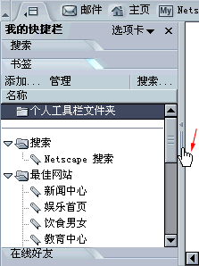
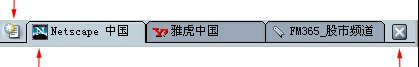
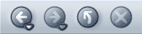

我的快捷栏
缩放柄
- 单击“个人工具栏”左侧的“打开我的快捷栏”图标

- 单击缩放柄打开或关闭“我的快捷栏”。
- 单击并拖动缩放柄重新调整“我的快捷栏”的大小。
可使用诸如“我的快捷栏”、书签和“通过选项卡浏览”等功能自定义 Netscape，使其更适应您的需要。
本节说明如何自定义 Netscape 的浏览器部分 - 浏览器。
|
本节包括： |
|
本节包括： |
“我的快捷栏”是浏览器中的一个可自定义区域，在那里可以保存总会用到的项目 - 最新的新闻和天气预报、您的地址簿或“好友”列表、股票报价、日历 - 以及很多其他的可选取项目。“我的快捷栏”在选项卡中列出并不断更新这些项目。
Netscape 已设置了一些“我的快捷栏”选项卡，但您可以通过添加、移出和重新安排选项卡来自定义“我的快捷栏”。
[ 返回到本节开始处 ]
除非您已经关闭了“我的快捷栏”，否则它会一直在浏览器的左侧打开。要查看选项卡：
|  |
我的快捷栏 |
|
若没看到“我的快捷栏”，可能已关闭。要打开“我的快捷栏”：
|
|
提示：要重新载入“我的快捷栏”选项卡，须用鼠标右键单击选项卡标题，并从弹出菜单中选择“重新载入”。
[ 返回到本节开始处 ]
若需添加新选项卡，请按下列步骤操作：
备注：若在“我的快捷栏”中添加了八个以上的选项卡， Netscape 会隐藏多余的选项卡以防混乱。要滚动查看隐藏的选项卡，可单击“我的快捷栏”底部的下箭头按钮直到看到所需选项卡。单击上箭头按钮可再次向上滚动。
提示：
也可将“我的快捷栏”选项卡在开启与关闭之间切换。
提示：要快速关闭一个“我的快捷栏”选项卡，可用鼠标右键单击其名称然后选择“隐藏选项卡”。
[ 返回到本节开始处 ]
备注：不是所有选项卡都能自定义。
指令会根据选项卡的来源不同有所改变，包括 Netscape，选项卡供应商可以是任何公司、组织或使用互联网的个人。
[ 返回到本节开始处 ]
[ 返回到本节开始处 ]
[ 返回到本节开始处 ]
| 使用“我的快捷栏”缩放柄打开、关闭“我的快捷栏”和调整它的边框大小： | |
|
我的快捷栏 |
|
| “我的快捷栏”关闭时仍可看到它的缩放柄。如果缩放柄丢失，可打开“查看”菜单，选择“显示／隐藏”，然后选择“我的快捷栏”。沿 Netscape 窗口左角上下移动鼠标指针。鼠标指针在接触到“我的快捷栏”的“缩放柄”时会变成手型，如图所示。
|
|
要移除包括缩放柄在内的“我的快捷栏”，可执行下列操作之一：
 。
。
[ 返回到本节开始处 ]
|
本节包括： |
“通过选项卡浏览”可使您在单一窗口打开一个以上的网页。每个网页在单一的浏览器窗口上方都有一排自己的选项卡。每个选项卡都出现在“选项卡栏”上。例如，可在一个窗口内访问 netscape.com、icq.com 和 cnn.com，而无须打开三个窗口。
| 单击此项打开一个新选项卡。 | |
|  | |
| 当前查看的选项卡
|
单击此项关闭当前查看的选项卡。
|
| 选项卡栏
|
|
在访问几个网页时无须打开多个的窗口，因此就可以释放更多空间到您的桌面。相反，您无须转换到另一窗口就可以很方便地在同一位置打开、关闭和重新载入网页。
[ 返回到本节开始处 ]
有很多方法可自定义“通过选项卡浏览”。例如，可以改变您的个性设置，使得能够从“地址栏”打开新的浏览器选项卡。也可以用其他方式设置“通过选项卡浏览”，例如在后台载入新的浏览器选项卡，这样在载入第二个页面时第一个页面保持在最前面。要了解更多有关“通过选项卡浏览”的信息，请参阅浏览器个性设置 - 通过选项卡浏览。
[ 返回到本节开始处 ]
可用下列方法打开一个浏览器选项卡：
打开一个新的空浏览器选项卡：
在浏览器选项卡中打开一个网页链接：
提示：
[ 返回到本节开始处 ]
要为当前窗口中的那一组浏览器选项卡创建书签（即添加一个组书签）：
[ 返回本节开头位置 ]
可以用多种方式关闭浏览器选项卡：
关闭当前查看的“浏览器选项卡”：
| 单击此项打开一个新的选项卡。 | |
| 当前查看的选项卡
|
单击此项关闭当前查看的选项卡。
|
| 选项卡栏
|
|
提示：
[ 返回到本节开始处 ]
|
本节包括： |
通常，网页以浏览器设置的缺省字体或以网页作者选择的字体显示。
要改变缺省字体：
很多网页作者选择自己的字体和字符大小。要使用非个性设置中指定的字体，可选定“允许文档使用其他字体”。
要调整字体可读性，可从下拉列表中为网页显示选择每英寸的点数（dpi）。选择“其他”，打开“校准分辨率”对话框，即可通过测量显示在屏幕上的一条线的长度来校准分辨率。增加屏幕分辨率会提高文本某些屏幕的可读性。
[ 返回到本节开始处 ]
通常，网页背景和文本颜色由浏览器或网页作者设置的缺省颜色决定。
要改变缺省颜色：
大多数网页作者选择自己的颜色。可通过选择“使用我所选的颜色，忽略指定颜色”来替换作者的创意。
在查看网页源代码时，可通过选择“启用语法突出显示功能”看到以特定颜色突出显示的网页源代码的 HTML 语法。
[ 返回到本节开始处 ]
可通过改变主题更改 Netscape 的外观和感觉。
备注：在应用了新主题后，要使此改变生效，须退出并重新启动 Netscape。
快捷方式：也可打开“查看”菜单，选择“应用主题”，然后选择希望使用的主题，即可改变主题。
[ 返回到本节开始处 ]
|
本节包括： |
如图所示，“浏览器工具栏”可协助您到处浏览网页。
|  | |||
| 后退 | 前进 | 重新载入 | 停止 |
[ 返回到本节开始处 ]
“个人工具栏”可以全部自定义，您可以决定希望保留在此栏的全部内容。“个人工具栏”的一些按钮已经启用，包括“我的 Netscape 页面”、“您的主页”、“搜索”和“邮件”。
| 个人工具栏
|
您可以轻易在“个人工具栏”上添加、删除和重新排列工具栏项目。
您可以为最喜欢的书签或包含组书签的文件夹添加按钮。要创建一个新书签添加到“个人工具栏”中：
 （位于“地址栏”中 URL 的左侧）拖动到“个人工具栏”中的希望位置。可将该图标直接拖到“个人工具栏”或“个人工具栏”上的一个文件夹中。有关在“个人工具栏”中添加书签文件夹的详细信息，请参阅添加个人工具栏书签文件夹。
（位于“地址栏”中 URL 的左侧）拖动到“个人工具栏”中的希望位置。可将该图标直接拖到“个人工具栏”或“个人工具栏”上的一个文件夹中。有关在“个人工具栏”中添加书签文件夹的详细信息，请参阅添加个人工具栏书签文件夹。
备注：如果在个性设置中选择了“显示网站图标”的话，书签图标 则可能以另一种特定页面图标的形式出现。有关更改此个性设置的详细信息，请参阅外观个性设置 - 外观。
“个人工具栏”文件夹的每个项目均作为工具栏按钮出现。要看到全部项目，可能需要扩大浏览器窗口。
添加个人工具栏书签文件夹
可以在“个人工具栏”中添加书签文件夹，用于分类整理您最喜爱的书签。例如，可以在“个人工具栏”中拥有一个与爱好相关的书签文件夹和另一个与工作有关的书签文件夹。要在“个人工具栏”中添加一个新书签：
新书签文件夹会出现在“个人工具栏”尾端。
现在您的“个人工具栏”上的按钮就与指定的文件夹中的书签相符合了。
提示：要快速移除位于“个人工具栏”（而不是文件夹）中的书签，用鼠标右键单击书签，然后选择“删除”。
备注：“个人工具栏”上的标准按钮，如“搜索”和“主页”按钮，不能被重新安排，但可在开启与关闭之间切换。。
提示：要快速移动“个人工具栏”上的书签，可单击并拖动该书签到“个人工具栏”上的另一位置或拖至一个文件夹中。
[ 返回到本节开始处 ]
“状态栏”位于任何 Netscape 窗口底部。它包括下列各部分：
 ：当一个网站以一种使您得到通知的方式使用 cookie 时，此图标出现。更多信息请参阅 Cookie 通知。
：当一个网站以一种使您得到通知的方式使用 cookie 时，此图标出现。更多信息请参阅 Cookie 通知。[ 返回到本节开始处 ]
使用任何 Netscape 窗口底部的“组件栏”可在不同任务（例如浏览、邮件和快信传递）之间转换。

[ 返回到本节开始处 ]
隐藏工具栏有两种方式。
使工具栏最小化：
完全隐藏包括三角按钮在内的工具栏：
要撤消此项操作，可打开“查看”菜单，选择“显示”，然后选中要显示的工具栏。
[ 返回到本节开始处 ]
|
本节包括： |
书签是访问您最爱和最常访问网站的快捷方式。您只须创建书签而无须输入很长的 URL（网址）就可直接访问您希望看到的页面。
可通过“书签”菜单，“我的快捷栏”上的“书签”选项卡和“管理书签”窗口找到您的书签。可为您最喜欢的网页创建书签，也可采用任何您希望的方式整理书签列表，从而控制书签列表。
Netscape 本身自带一些可用的书签。要使用一个书签：
[ 返回到本节开始处 ]
可以为您的最喜欢的网页创建书签，以便今后能很容易地再找到这些网页。
要为当前网页创建书签，须执行下列步骤之一：
提示：如果在一个窗口打开了多个浏览器选项卡，可选择“将此选项卡组存入书签”，就会添加一个可以打开所有当前窗口选项卡的书签。
拖动到“个人工具栏”中的某个位置上。可将书签拖到下列位置：
有关在“个人工具栏”中添加书签的详细信息，请参阅“添加“个人工具栏”书签”。
| 个人工具栏
|
拖到“书签”选项卡的书签列表中的某个位置上。
备注：
可能以另一种特定页面图标的形式出现。有关更改此个性设置的详细信息，请参阅外观个性设置 - 外观。[ 返回到本节开始处 ]
要整理您的书签，须打开“书签”菜单，选择“管理书签”。在“管理书签”窗口中执行下列任何任务。
提示：可从“我的快捷栏”中的“书签”选项卡打开“管理书签”窗口。单击“书签”选项卡顶部的“管理”选项。
查看文件夹内的书签：
将书签或文件夹移至列表中的另一个位置：
创建新文件夹或分隔符：
从列表移除书签或文件夹：
在“管理书签”分类整理您的书签：
当您创建一个新的书签时，Netscape 会自动将其添加到您的书签列表的底部。如果您更希望将您的书签保存在一个文件夹中，那么也可指定一个新书签文件夹。
[ 返回到本节开始处 ]
您可以改变任何个人书签信息。
可以对书签进行重命名（名称出现在书签列表中）、添加描述信息或设置一个密码。（您可以在位置字段输入书签密码，访问书签链接的站点。）
也可以设置 Netscape，使其查看书签链接的网站的更新情况。
[ 返回到本节开始处 ]
要搜索书签列表：
提示：若很难读列表，可尝试扩大搜索结果窗口。
[ 返回到本节开始处 ]
您的书签存储在命名为 bookmarks.html 的文件中。可导出此文件的一个副本，并将其保存在您所选择的一个文件夹中。然后您就可编辑它，像对任何 HTML 文件一样地进行处理。
您的 Netscape 书签不会因此操作程序而被更改。
也可以从其他来源导入书签文件。例如，可以从早期的 Netscape 版本，其他浏览器或从朋友发来的书签文件中导入。
在开始前，应确认希望导入的书签文件是一个 HTML 文件。
导入的书签文件会被作为一组新书签对待，并被添加到书签列表的底部。如果已指定了一个新书签文件夹，导入的书签则会被添加到该文件夹中。
备注：导入一个书签文件就是从该文件导入书签和文件夹。不会创建两个书签文件。
[ 返回到本节开始处 ]
|
本节包括： |
您可以指定浏览器启动时希望载入的页面：
备注：如果选择了“主页”，须在“位置”字段输入它的 URL。
[ 返回到本节开始处 ]
您的主页是指您单击“个人工具栏”上的“主页”按钮时打开的页面。依照不同的个性设置，主页也可以是您在启动 Netscape 时自动打开的页面。
指定您的主页：
提示：要快速指定您的主页，可将书签图标 从“地址栏”拖至“个人工具栏”上的“主页”按钮即可。
[ 返回到本节开始处 ]
您可以选择启动 Netscape 时同时启动的组件（例如“邮件和新闻组”和“编写器”）：
[ 返回到本节开始处 ]
2002 年 6 月 19 日
© 1994-2002 年 Netscape Communications Corporation 版权所有。